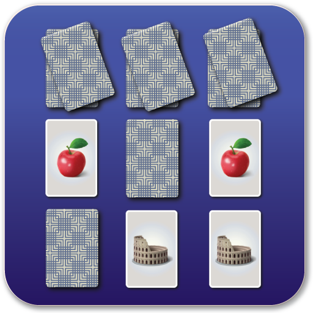

Welcome
This website is a gateway to many different realms of fun.
The website consists of a variety of games from the categories Logic, Memory, Puzzle, Cards, Number, and Word.
To find games scroll down, and to play them click on the underlined links or images.
Logic & Memory
Logic games
Connect four

Connect Four is a classic two-player strategy game that has entertained people for generations.
The game is played on a vertical grid with six rows and seven columns, and the objective is to be the first to connect four of one's own colored discs either horizontally, vertically, or diagonally while preventing the opponent from doing the same.
Its simplicity and accessibility make it a great choice for players of all ages, from children to the elderly.
Connect Four encourages critical thinking, planning, and spatial awareness as players strategize to outwit their opponents.
Its quick gameplay and competitive nature make it an enjoyable way to spend quality time with friends and family, fostering healthy competition and social interaction.
Whether you're a seasoned player or new to the game, Connect Four offers hours of engaging entertainment and the thrill of victory when you successfully align four discs in a row.
Memory games
Memory match

Memory Match, often known as Concentration or Pairs, is a classic card game that enhances memory and concentration skills.
It involves a deck of face-down cards, with each card having a matching pair.
Players take turns flipping over two cards at a time, trying to find matching pairs by remembering the locations of previously revealed cards.
The objective is to clear the entire board by matching all pairs.
Memory Match is suitable for players of all ages as it offers a fun and engaging way to sharpen memory, cognitive abilities, and attention to detail.
It's an enjoyable pastime that fosters mental acuity and can be played individually or with others, making it a versatile and cherished game.
Click here to see more Logic & Memory games
Puzzle & Card
Puzzles
Jigsaw Puzzle

Jigsaw puzzles are a timeless and engrossing form of entertainment that captivate people of all ages, including seniors.
These puzzles consist of countless interlocking pieces that must be assembled to form a complete image, often depicting beautiful landscapes, famous landmarks, or works of art.
For the elderly, jigsaw puzzles offer a wonderful way to relax, exercise their cognitive abilities, and pass the time with a sense of accomplishment.
The process of sorting, matching, and fitting the pieces together provides a mentally stimulating and satisfying experience, making it an ideal activity for individuals seeking both mental engagement and relaxation in their leisure time.
Whether enjoyed solo or as a shared project with friends and family, jigsaw puzzles continue to be a beloved and enduring pastime that fosters creativity, concentration, and a sense of achievement.
Card games
Solitare

Solitaire, also known as Patience, is a classic single-player card game enjoyed by individuals of all ages, including the elderly.
The game's objective varies slightly depending on the version, but it generally involves arranging a deck of shuffled cards into a specific order or pattern by following a set of rules.
Solitaire offers a solitary and relaxing way to pass the time, providing mental stimulation while requiring focus and strategic thinking.
It's a popular choice for those seeking a quiet and enjoyable card game that can be played at one's own pace, making it a timeless and satisfying pastime.
Click here to see more Puzzle & Card games
Number & Word
Number games
Sudoku

Sudoku is a captivating number puzzle game enjoyed by people of all ages.
It features a 9x9 grid where players must strategically fill in numbers from 1 to 9, ensuring that no digit repeats within each row, column, or 3x3 subgrid.
This deceptively simple-looking game offers a mental workout, promoting logical thinking and problem-solving skills.
It's a great way to unwind, relieve stress, and keep the mind sharp, making it a beloved pastime for individuals seeking both relaxation and mental stimulation.
Word games
Scrabble

Scrabble, the enduring word game, is a captivating pastime that challenges players to strategically arrange letter tiles on a game board to form words while aiming for the highest possible scores.
This classic game is a cherished choice for individuals of all ages, including the elderly, offering not only a mental workout that bolsters vocabulary and cognitive skills but also a means of social interaction, whether played with family or friends.
Scrabble's enduring popularity lies in its ability to simultaneously stimulate the mind and create enjoyable opportunities for meaningful connections, making it a timeless and cherished activity.
Click here to see more Number & Word games
Disclaimer: The content on this website includes images and links which are sourced from various online platforms and websites. All rights go to original creators of this content.